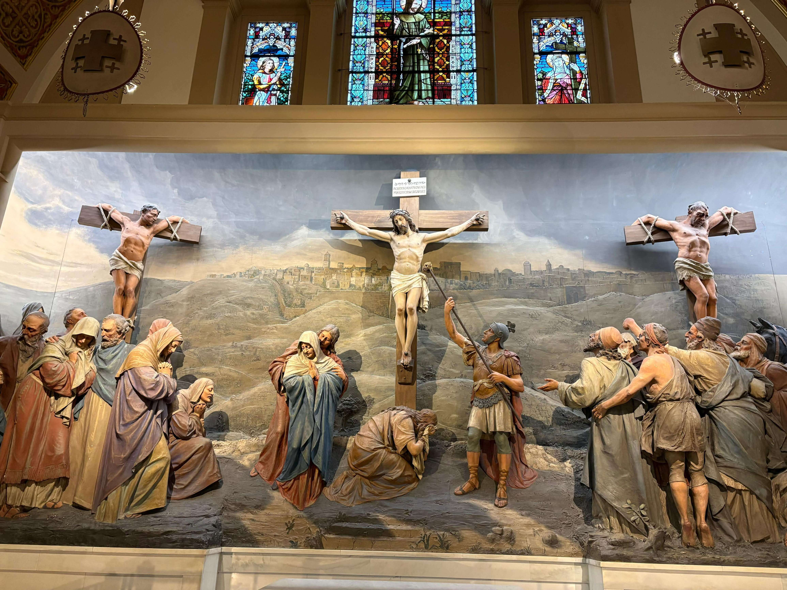

Franciscan Monastery of the Holy Land in America
Washington, DC · United States
The Franciscan Monastery of the Holy Land in America is a distinctive religious and architectural landmark located in Washington, DC. Established in 1898, the monastery was built to support the Franciscan mission of preserving and sharing the spiritual heritage of the Holy Land. Its architecture draws inspiration from important Christian sites in the Middle East, while its peaceful gardens and carefully maintained grounds create a tranquil atmosphere away from the busy capital. One of its most remarkable features is the series of replicas of sacred places associated with the life of Jesus, allowing visitors to experience elements of the Holy Land without leaving the United States. The monastery also contains beautiful chapels, detailed mosaics, and artistic decorations that reflect centuries of religious tradition. Walking through the grounds offers an opportunity to appreciate the connection between architecture, history, and spirituality. These photographs capture my visit to this unique and peaceful place in Washington, DC.
My Photo Gallery
Explore my personal travel photographs and memories from the Franciscan Monastery of the Holy Land in America in Washington, DC.
View All Photos ↗